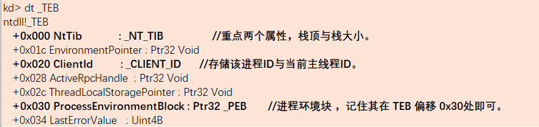
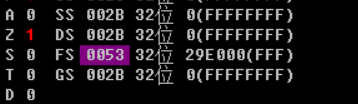
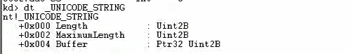
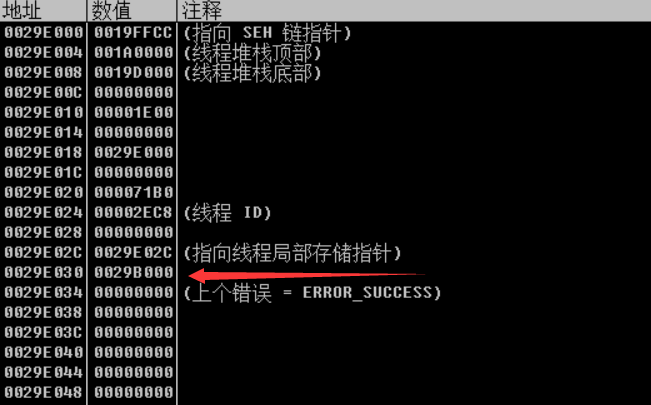
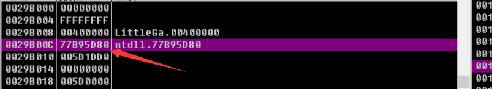
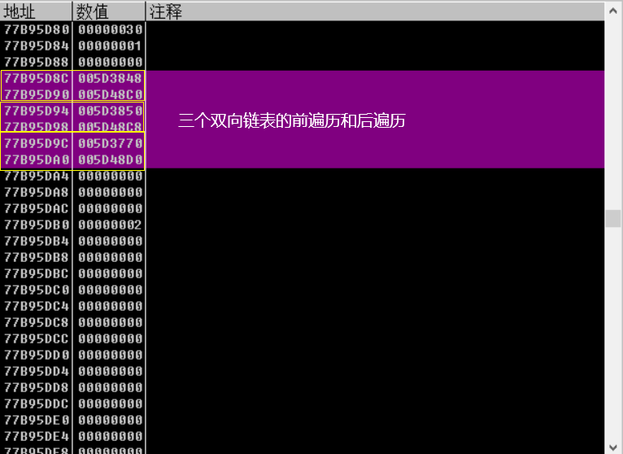
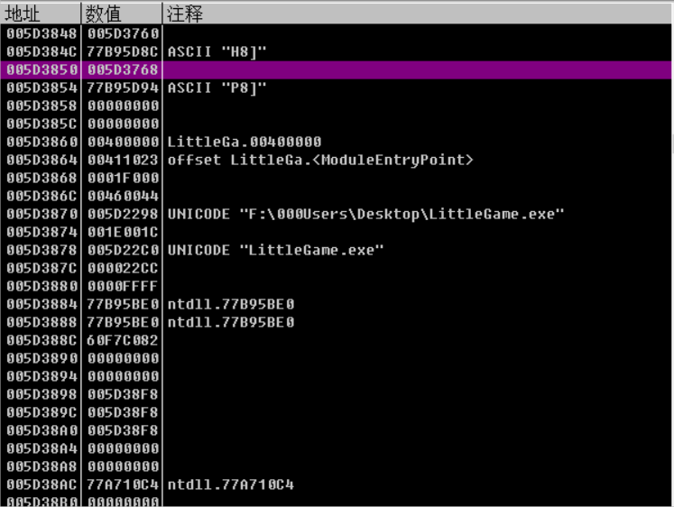
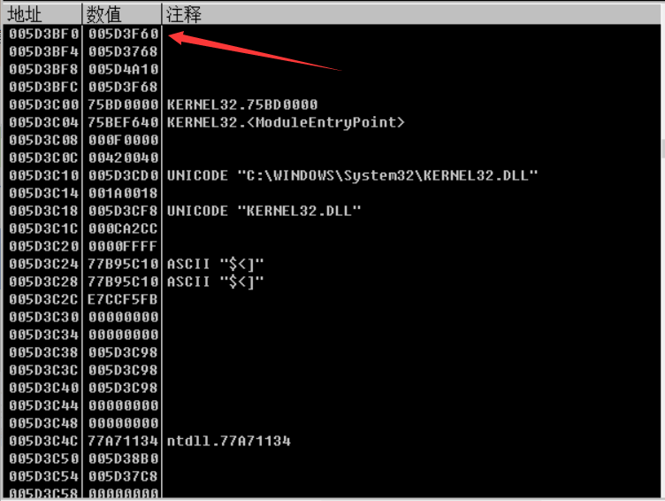
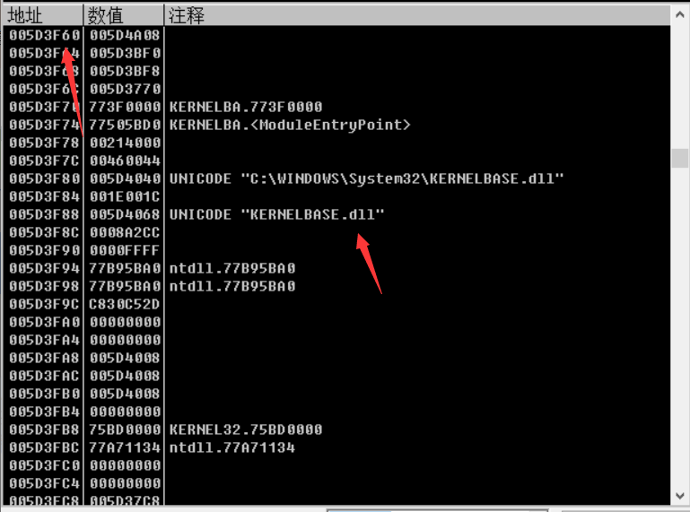

# 模块隐藏的实现原理
普通 API 查找模块实现思路：其通过查询在 R3 中的 PEB (Process Environment Block 进程环境块) 与 TEB (Thread Environment Block 进程环境块) 来找到一个双向链表，通过遍历双向链表中某一成员 (字符串) 来查找全部模块。
模块隐藏实现思路：在 R3 层的模块隐藏，我们需要做的就是将其该链表断链，将某一模块从这个双向链表中摘除，这样再调用传统的 API 时就会搜索不到。
# 结构体成员详细介绍
# TEB 结构体 -- 内存地址为 fs:[0] 处。
使用 Windbg 的 "dt _TEB" 命令来查看 TEB 结构体

# 通过 olldbg 查看该结构体
打开任意进程，在寄存器窗口找到 fs:[0]，查看其内存地址。

在内存窗口使用命令 "db 29E000" 跳转到该内存，使用地址格式 (长型 - 地址) 显示。

# PEB 结构体 -- fs:[0x30]
使用 Windbg 指令 dt _PEB 查看 PEB 结构体，重点关注最后一个 进程加载信息表。
查看 _PEB_LDR_DATA 进程加载信息表 的结构体
重点关注 0x00c 处的指针，其指向 _PEB_LDR_DATA 这个结构体。
在这个结构体中 0x00c、0x014、0x01c 分别表示：模块加载顺序、加载后在内存中的顺序、模块初始化的顺序。
它们都是一个双向链表指针，其指向_LDR_DATA_TABLE_ENTRY 结构体中的三个成员，而 _LDR_DATA_TABLE_ENTRY 中存储着就是关于有关模块信息的元素 (比如模块名等)
先了解一下 Unicode 结构体

这是 PEB 中存储着我们模块名称的数据在哪个地方。

# 使用 olldbg 来查看查找首先加载模块的模块名称
TEB->PEB-> InLoadOrderModuleList -> BaseDllName
接之前 TEB 内容查找到 PEB 的所在位置 fs:[0x30]。

进入 PEB 后找 0x0c 的位置，接着在内存窗口跟随。

进入后我们随便选择三个链表中的一个跟随，我这里选择了第一个

进入后即可看到如下内容

可以在通过 _LIST_ENTRY 可以遍历前一个模块的内容和下一个模块的内容

跟随

# 代码实现断链
#include <stdio.h> | |
#include <Windows.h> | |
/* 所需要的结构体 | |
1. _LDR_DATA_TABLE_ENTRY 链表指向数据 | |
2. _PEB_LDR_DATA 表示其 PEB0x 处指向的数据表 | |
3. _LIST_ENTRY 指针指向的链表 | |
*/ | |
typedef struct _LSA_UNICODE_STRING { | |
USHORT Length; | |
USHORT MaximumLength; | |
PWSTR Buffer; | |
} | |
UNICODE_STRING, * PUNICODE_STRING; | |
typedef struct _PEB_LDR_DATA | |
{ | |
DWORD Length; // +0x00 | |
bool Initialized; // +0x04 | |
PVOID SsHandle; // +0x08 | |
LIST_ENTRY InLoadOrderModuleList; // +0x0c | |
LIST_ENTRY InMemoryOrderModuleList; // +0x14 | |
LIST_ENTRY InInitializationOrderModuleList;// +0x1c | |
} PEB_LDR_DATA, * PPEB_LDR_DATA; // +0x24 | |
typedef struct _LDR_MODULE | |
{ | |
LIST_ENTRY InLoadOrderModuleList; | |
LIST_ENTRY InMemoryOrderModuleList; | |
LIST_ENTRY InInitializationOrderModuleList; | |
void* BaseAddress; | |
void* EntryPoint; | |
ULONG SizeOfImage; | |
UNICODE_STRING FullDllName; | |
UNICODE_STRING BaseDllName; | |
ULONG Flags; | |
SHORT LoadCount; | |
SHORT TlsIndex; | |
HANDLE SectionHandle; | |
ULONG CheckSum; | |
ULONG TimeDateStamp; | |
} LDR_MODULE, * PLDR_MODULE; | |
// 所谓模块句柄，即该模块的入口地址 | |
void hide_module(LPCSTR szDllName) | |
{ | |
HMODULE hMod = GetModuleHandleA(szDllName); | |
PLIST_ENTRY Head, Cur; | |
PPEB_LDR_DATA ldr; | |
PLDR_MODULE ldm; | |
__asm | |
{ | |
mov eax, fs: [0x30] | |
mov ecx, [eax + 0x0c] //Ldr | |
mov ldr, ecx | |
} | |
Head = &(ldr->InLoadOrderModuleList); | |
Cur = Head->Flink; | |
do | |
{ | |
ldm = CONTAINING_RECORD(Cur, LDR_MODULE, InLoadOrderModuleList); | |
if (hMod == ldm->BaseAddress) | |
{ | |
// 三个链表同时给断掉 | |
ldm->InLoadOrderModuleList.Blink->Flink = | |
ldm->InLoadOrderModuleList.Flink; | |
ldm->InLoadOrderModuleList.Flink->Blink = | |
ldm->InLoadOrderModuleList.Blink; | |
// | |
ldm->InInitializationOrderModuleList.Blink->Flink = | |
ldm->InInitializationOrderModuleList.Flink; | |
ldm->InInitializationOrderModuleList.Flink->Blink = | |
ldm->InInitializationOrderModuleList.Blink; | |
// | |
ldm->InMemoryOrderModuleList.Blink->Flink = | |
ldm->InMemoryOrderModuleList.Flink; | |
ldm->InMemoryOrderModuleList.Flink->Blink = | |
ldm->InMemoryOrderModuleList.Blink; | |
break; | |
} | |
Cur = Cur->Flink; | |
} while (Head != Cur); | |
} | |
int main() | |
{ | |
// 通过模块名，来获取模块句柄 | |
printf("****按任意键隐藏模块*****\n"); | |
getchar(); | |
LPCSTR lpDllName = "kernel32.dll"; | |
hide_module(lpDllName); | |
printf("****隐藏模块完成*****\n"); | |
getchar(); | |
} |
# Reference
https://www.cnblogs.com/onetrainee/p/11674211.html